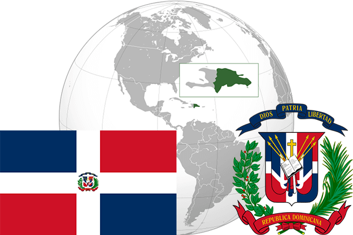

To`liq nomi: Dominika Respublikasi
Region: Markaziy Amerikaning Sharqiy qismi
Qonunchilik shakli: Respublika
Mustaqillik kuni : 27-fevral 1844 yil (Gaitidan)
Poytaxt: Santo-Domingo
Maydoni: 48 730 km² (dunyoda 128 -o`rinda )
Chegaradosh davlatlari: Gaiti
Aholisi: 10 734 247 (dunyoda 85 -o`rinda, 2017 -yil roʻyxat)
Aholi zichligi: 201 /km²
Aholining o`rtacha yoshi: 73,1 yil ( 74,9 ayollar, 71,3 erkaklar)
Rasmiy tili: Ispan tili
Dini: Xristian
Pul birligi: Domenika pesosi
Telefon prefiksi: +1-809, +1-829
Internet domen: .do
Xalqaro tashkilotlarga a`zoligi: BMT (1945– yildan)
Dengiz va okeanlarga chiqishi: Karib dengizi, Atlantika okeani
YIM: Butun: $ 146.277 mln, Jon boshiga: $ 10,319 (2014 - yil roʻyxati)
Yirik shaharlari: Santo-Domingo